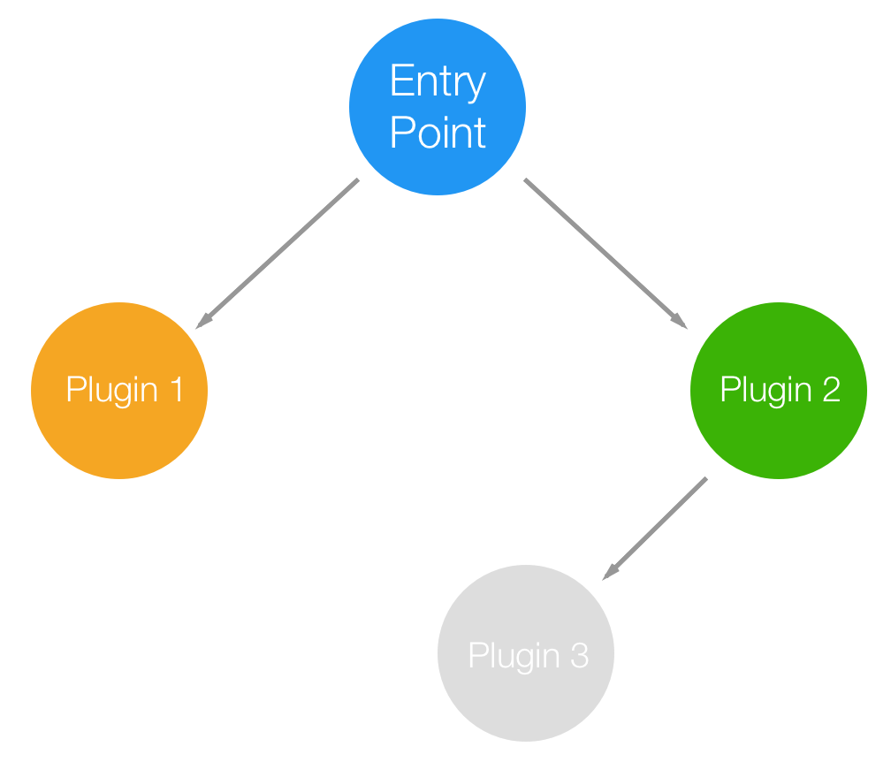
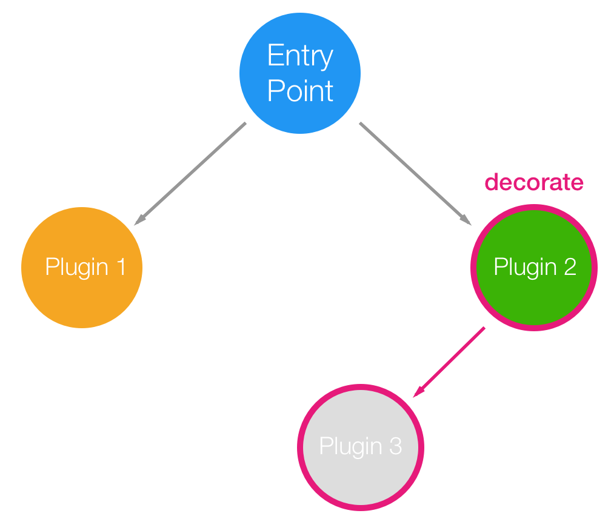
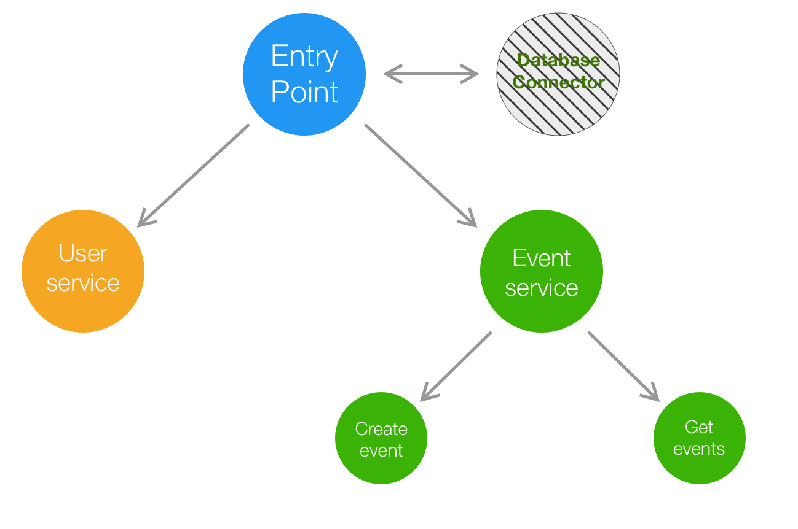

Monoliths
always
pay their
debts
by Tomas Della Vedova
@delvedor

Roadmap
- Monoliths vs Microservices
- Fastify
- Let's build our new startup!
Monoliths vs Microservices


Fastify
Fastify is a web framework highly focused on providing the best developer experience with the least overhead and a powerful plugin architecture.
const fastify = require('fastify')()
fastify.get('/', async (request, reply) => {
return { hello: 'world' }
})
fastify.listen(3000)fastify.io

Fastify Plugins
A brief overiview
Registering plugins
fastify.register(
require('./my-plugin'),
{ options }
)
Plugin Syntax
async function myPlugin (fastify, options) {
// register other plugins
fastify.register(...)
// add hooks
fastify.addHook(...)
// add decorator
fastify.decorate(...)
// add routes
fastify.route(...)
}
module.exports = myPlugin
Plugins Architecture
Plugins: Encapsulation
Exposing functionality to parents
const fp = require('fastify-plugin')
async function myPlugin (fastify, options) {
fastify.decorate('util', yourAwesomeUtility)
// now you can use it with `fastify.util`
}
module.exports = fp(myPlugin)
Plugins: Encapsulation

Plugins: Real world
Everything is a plugin
Let's build our new startup!
- Let's build the next billion dollar startup, Moo!
- Basically Twitter, but with more characters and cows.
- A user should be able to:
- Signup!
- Post a new moo
- Get a moo by id
- Get all the moos of a user
Let's build our new startup!
The API will expose three different services, login, moo and user.
/signup
/moo/:id
/moo/create
/user/:username/moos
A little bit of configuration
Being consistent across microservices is a difficult task, to help you Fastify provides a powerful CLI.
npm install fastify-cli -g
mkdir moo-project
cd moo-project
npm init -y
fastify generate
Project structure
app.js: your entry pointservices: the folder where you will declare all your endpointsplugins: the folder where you will store all your custom pluginstest: the folder where you will declare all your test
Scripts
npm start: run your servernpm run dev: run your server with pretty logs
(not suitable for production)npm run lint: run the default linternpm testrun your test suite
“Let's the hack begin”
Download the project
https://git.io/fNtFL

docker-compose upMongoDB
npm install fastify-mongodb
fastify.register(require('fastify-mongodb'), {
url: 'mongodb://127.0.0.1:27017/moo'
})docker-compose up
Security
Security
Use bcrypt to store user passwords
npm install bcrypt
Authentication

npm install fastify-basic-auth
Let's take a look
at our monolith
Application architecture

Testing time
https://git.io/fNLAt
From monolith to microservices
Let's begin!
Plan of attack
- Create a project with
fastify-cliand name itlogin - Copy the
services/login.jsfrom the monolith's into the new login project'sservicesfolder. - Do the same for
services/post.jsandservices/user.js - Copy the authentication logic from the monolith's
app.jsfile to the new post and user project'sapp.jsfiles
Test again your infrastructure
https://git.io/fNLAt
From monolith to microservices

Awesome! Now update all your clients
so they know which address to call
based on the service they need to use.

WRONG!
The infrastructure
should be transparent
to the client.
Solution
Gateway

Gateway
npm install fastify-http-proxy
fastify.register(require('fastify-http-proxy'), {
upstream: 'http://localhost:3030',
prefix: '/post'
})
Prefix handiling
- Remove the
autoPrefixline from the services - Let the gateway handle the prefixes with the
prefixoption
docker-compose
docker-compose stop- Use
docker-compose-v2.ymlto run your infrastructure - Update the links of the gateway with the logical names used inside the
docker-composefile docker-compose up
Docker
fastify.register(require('fastify-http-proxy'), {
// update the previous url with
// the logical name used inside docker
upstream: 'moo-post',
prefix: '/post'
})
Let's talk about authentication
- There is no need to duplicate the authentication logic across the microservices, you can delegate to the gateway this responsability
- Move the authentication logic from each service to the gateway
- Remember that not all services require authentication
Final test
https://git.io/fNLAt
Bonus
Update the authentication strategy
and use JWT.
Thanks!
by Tomas Della Vedova
@delvedor